Project Overview
People express regret after high-stakes life decisions: career changes, immigration moves, relationship choices. This project collects regret-related posts from Reddit, engineers structured features (sentiment scores, reversal indicators, time-to-regret), and uses statistical and machine-learning methods to understand what predicts decision reversal.
Dataset
Data is collected from Reddit's public JSON API across nine subreddits in three life domains. Posts are filtered for explicit regret language (e.g., "I regret", "I wish I had", "my biggest mistake") and screened to exclude hypothetical or future-oriented regret.
| Property | Value |
|---|---|
| Raw posts collected | ~21,800 across nine subreddits |
| Filtered regret posts | 3,604 (structured analysis subset) |
| Domains | Career (1,998) - Immigration (297) - Relationships (1,309) |
| Subreddits | r/cscareerquestions, r/careerguidance, r/jobs, r/careeradvice, r/USCIS, r/IWantOut, r/immigration, r/relationship_advice, r/relationships |
| Engineered features | vader_compound, vader_neg, urgency_score, reversal, time_to_regret_days, topic, emotion, event_type, agency_score, hedging_score, social_embed_score, causal_reasoning_score, future_orient_score, comment_count_log, score_log, sentence embeddings (PCA-10) |
The broader collection pipeline scraped ~21.8k raw posts. After regret filtering, deduplication, and structured feature extraction, the preliminary analysis uses 3,604 confirmed regret posts enriched with VADER sentiment and improved temporal extraction (47.2% time coverage, up from 10.7%).
Methods
- Collection & Filtering: Reddit API scraping followed by regex-based regret extraction with exclusion of hypothetical language.
- Feature Engineering: VADER sentiment analysis on regret sentences; urgency scores from lexical cues; reversal labels from action verbs; time-to-regret from enhanced temporal extraction (regex + dateparser patterns); sentence embeddings (all-MiniLM-L6-v2, PCA-50); 7-class emotion classification (GoEmotions distilRoBERTa); triggering event taxonomy (per-domain keyword-based event type labeling); psycholinguistic features (agency, hedging, social embeddedness, causal reasoning, future orientation); community engagement metrics (log-comments, log-score, upvote ratio).
- Causal Inference: Propensity score matching (1:1 nearest-neighbor, career vs immigration); cohort/temporal analysis with logistic regression (year x domain interaction); Kaplan-Meier by era.
- Label Validation: Comment-thread scraping (n=700) for reversal confirmation; keyword vs comment-based label agreement (Cohen's kappa); LLM-based annotation pipeline (script ready, requires API key).
- Modeling: Cross-domain reversal classification (LR/RF/GBM, stratified 5-fold CV, bootstrap CIs); leave-one-domain-out generalization; NMF topic modeling; Cox PH regression with 13 covariates; nested logistic models for subreddit confounding.
- Statistical Testing: Chi-square tests; Mann-Whitney U with effect sizes; Kruskal-Wallis H; log-rank tests; likelihood ratio tests for model comparison; log-odds ratio linguistic analysis (Monroe et al. 2008); bootstrap CIs on all key metrics.
Preliminary Results
Reversal rates differ significantly across life domains
Key insight
Structural constraints (e.g., immigration systems) limit the ability to act on regret, even when emotional intensity is high. Immigration combines strong regret expression with the lowest reversal rate, a pattern consistent with barriers to undoing a move or visa path.
Evidence


Model Performance
| Model | CV AUC (5-fold) | Test AUC | 95% CI |
|---|---|---|---|
| Logistic Regression | 0.657 +/- 0.017 | 0.641 | [0.598, 0.680] |
| Random Forest | 0.675 +/- 0.024 | 0.652 | [0.610, 0.691] |
| Gradient Boosting | 0.653 +/- 0.018 | 0.631 | [0.589, 0.671] |
The best-performing model (Random Forest) achieves AUC 0.652 [0.610, 0.691], indicating that text and domain features capture moderate but limited signal for predicting reversal. Top features include has_time, left, vader_compound, and vader_neg.


has_time) is the strongest single predictor of reversal, followed by action words like "left" and sentiment features (vader_compound, vader_neg). Domain membership also contributes, with immigration as a distinct category.
Next steps
Sentiment, not urgency keywords, captures the emotional signal in regret
Key insight
Regret language is overwhelmingly reflective, not impulsive. VADER sentiment captures a small but statistically significant emotional difference that simple keyword counting misses entirely.
Evidence


Next steps
Regret timing varies dramatically by domain, with relationships appearing fastest
Key insight
Relationship regret appears within weeks; career and immigration regret takes months to years. This reflects faster feedback loops in interpersonal decisions versus the slow-unfolding consequences of structural life changes.
Evidence


Next steps
Topic modeling reveals domain-specific regret patterns

What triggers regret matters: voluntary departures reverse at 2x the rate of visa denials
Key insight
Reversibility of the precipitating event predicts reversibility of the regret. When someone chose to leave (voluntary departure, n=13, 53.8%), they retain agency and reversal is possible. When a visa was denied (n=80, 26.3%), reversal requires overcoming an external system barrier, which suppresses action even when emotional regret is present. In relationships, abuse-driven regret (45.5%) leads to action as readily as voluntary endings (45.8%), suggesting high emotional clarity in those situations.
Evidence
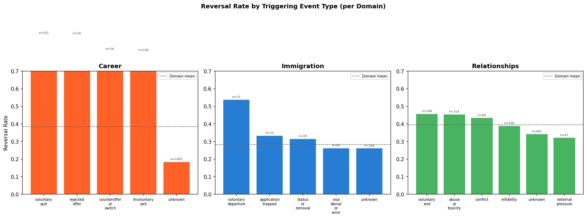
Next steps
Reversal rates diverge over time: career rises while immigration declines
Key insight
The Great Resignation did not increase career reversal. Counterintuitively, career posts during 2021-2022 show a lower reversal rate (33.6%) than the baseline (39.2%), with Fisher p = 0.10. This indicates that Great Resignation-era career regret was more often about difficulty finding re-employment than about wanting to undo a quit decision.
Evidence
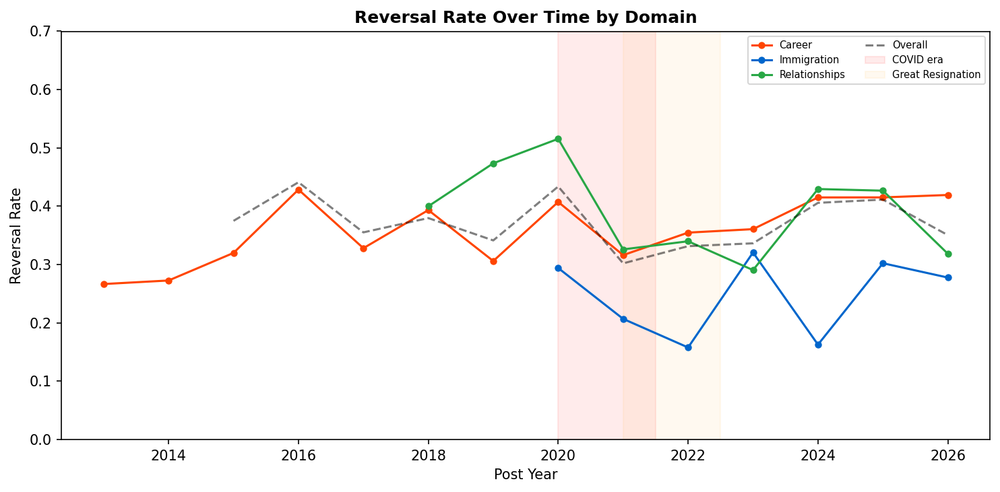
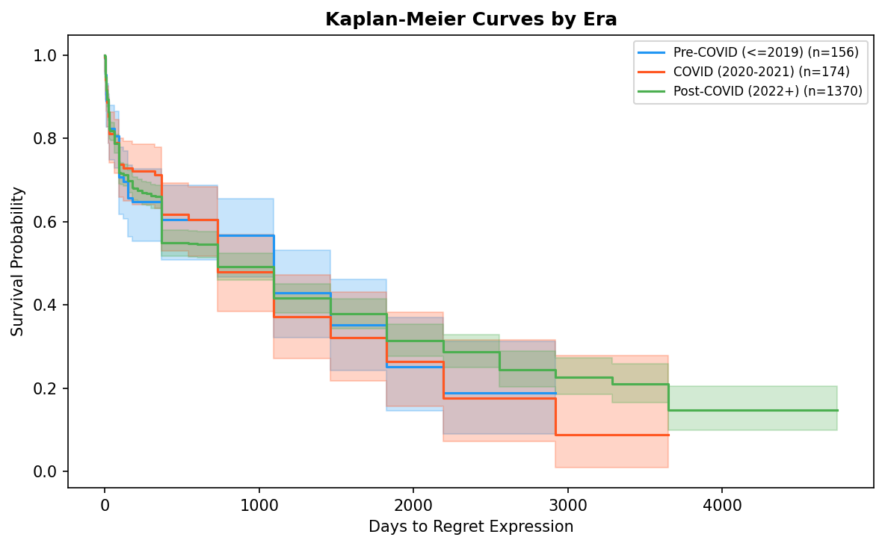
Next steps
Label validation: keyword-based reversal labels show low agreement with comment-based evidence
Key insight
Keyword labels measure "action language" rather than verified reversal. Of 299 posts labeled as reversal by keywords, only 21 (7%) had comment-thread evidence confirming action. This does not invalidate the keyword measure, but reframes it: the "reversal" variable in this study is best interpreted as "presence of action-oriented language in regret narratives" rather than "confirmed behavioral change." This is a common operationalization in NLP-based behavioral research, but the magnitude of the gap (kappa = 0.03) is notably low.
Evidence
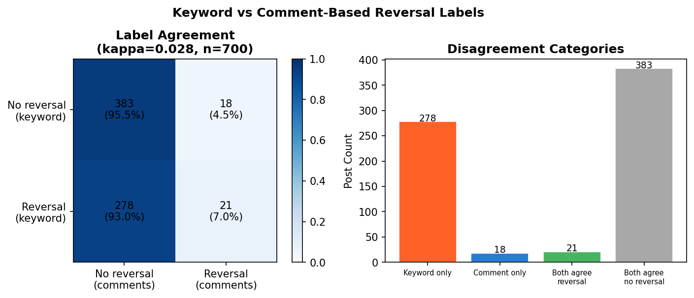
Next steps
Extended Analysis
Emotion detection reveals sadness dominates regret, but anger predicts reversal
Key insight
Emotionally engaged regret (especially sadness and anger) is more likely to lead to action. Posts classified as "neutral" have a reversal rate 13 percentage points lower than sadness-labeled posts, indicating that emotional intensity is a necessary precondition for behavioral change.
Evidence
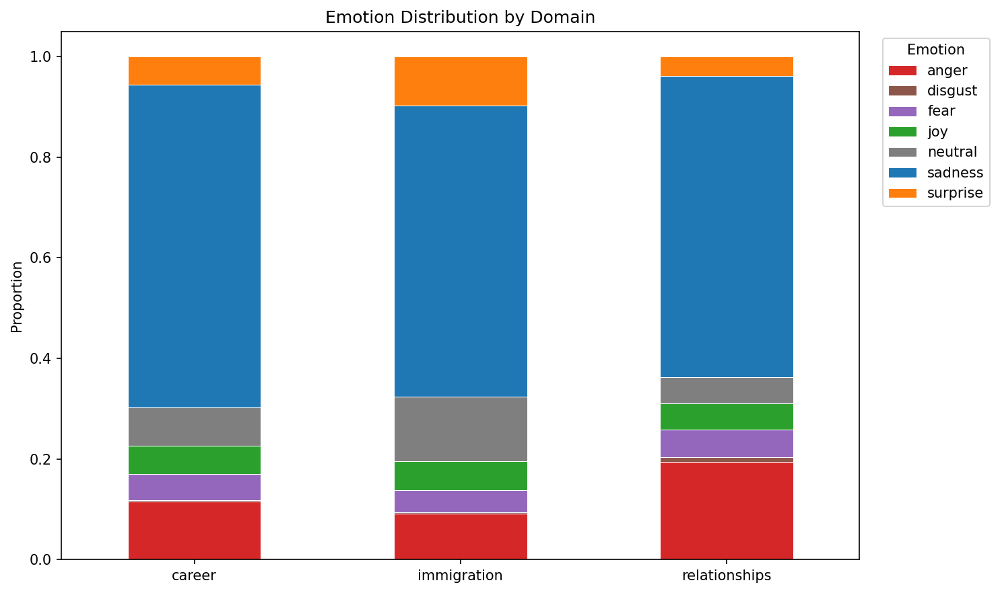
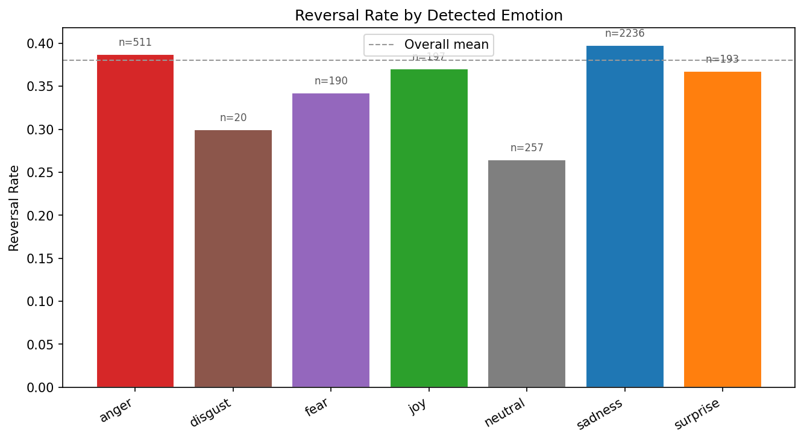
Next steps
Cross-domain generalization: reversal patterns transfer across life domains
Key insight
Linguistic markers of reversal are partially domain-invariant. The surprisingly strong performance on held-out immigration (AUC 0.697) suggests that the semantic features of "people who acted on their regret" share common patterns across career, immigration, and relationship contexts.
Evidence
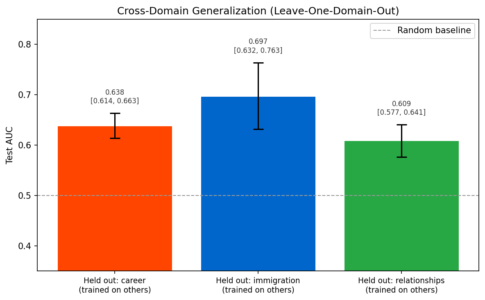
Next steps
Cox regression: post length and urgency are the strongest hazard predictors
Key insight
Longer posts with urgency language predict faster reversal. The hazard ratio of 1.53 for log post length indicates that each doubling of post length increases the reversal hazard by 53%. Immigration's HR of 0.64 quantifies the structural suppression of reversal: immigration posters have 36% lower hazard of acting on regret compared to career posters.
Evidence
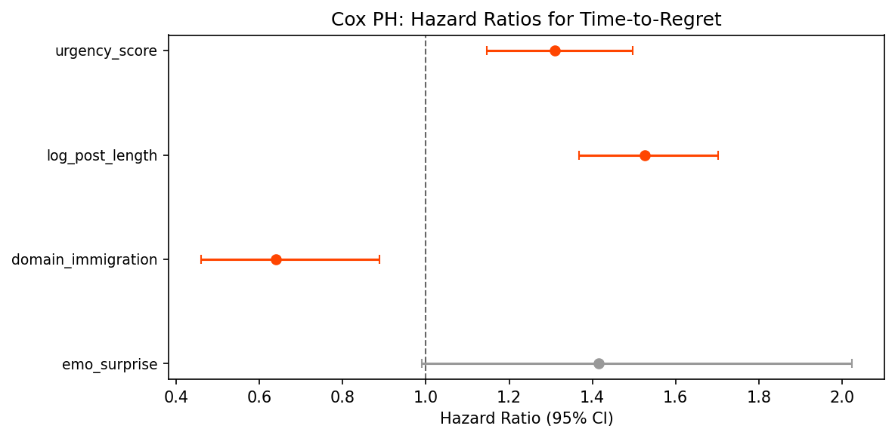
| Log-rank test | Statistic | p-value |
|---|---|---|
| Career vs Immigration | 8.42 | 0.004 |
| Career vs Relationships | 11.99 | 0.0005 |
| Immigration vs Relationships | 20.21 | 7 x 10-6 |
Linguistic markers: action words predict reversal, reflection words predict non-reversal
Key insight
Reversal language is action-oriented; non-reversal language is deliberative. People who reversed their decisions use past-tense action verbs ("left", "quit"), while those who did not reverse are still seeking input ("advice", "help"). This linguistic separation validates our reversal labels and suggests that language alone encodes decision state.
Evidence
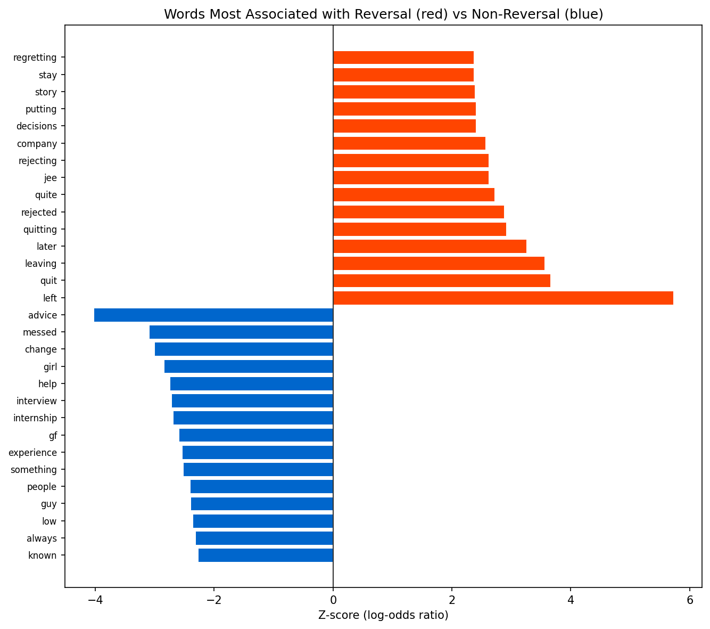
Modal verb analysis
"Wish" dominates across all domains (~15 per 1,000 tokens), consistent with regret's counterfactual nature. "Should" is most frequent in career (2.2 per 1k) vs relationships (1.2 per 1k), reflecting career's prescriptive advice culture. "Would" peaks in immigration (3.9 per 1k), suggesting hypothetical reasoning about immigration paths not taken.
Sentence embeddings reveal semantic clustering by domain with reversal overlap
Evidence
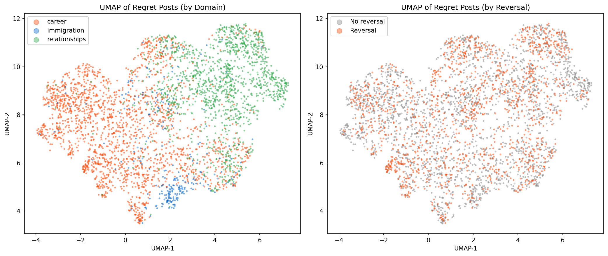
Subreddit-level variation adds signal beyond domain, but core effects are stable
Key insight
Feature effects are robust to subreddit-level confounding. While individual subreddits (notably USCIS, OR=0.39) show distinct reversal patterns beyond domain grouping, the core predictive features (urgency, has_time, VADER) are stable across model specifications. This indicates the main findings are not artifacts of subreddit-specific norms.
| Model | pseudo-R2 | AIC | LR test p |
|---|---|---|---|
| Features only | 0.026 | 4653.4 | -- |
| + Domain | 0.029 | 4642.7 | < 0.001 |
| + Subreddit | 0.034 | 4634.5 | 0.003 |
Future-oriented language is the strongest psycholinguistic predictor of reversal
Key insight
People who have already acted use less future-oriented language. The negative correlation between future orientation and reversal indicates that posts containing action language ("quit", "left") naturally contain less prospective language. Conversely, posts heavy in "plan to", "want to", "hope to" reflect ongoing deliberation rather than completed action. This validates the reversal construct: it captures posts where action has occurred, not posts where action is merely contemplated.
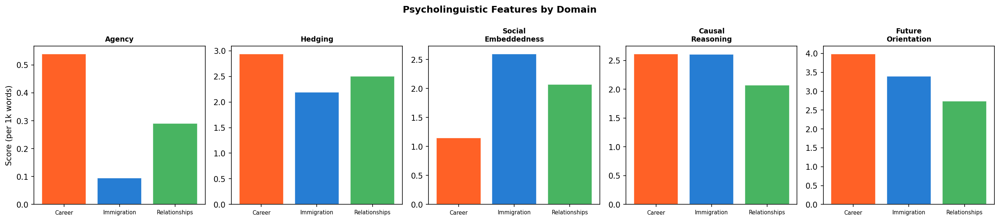
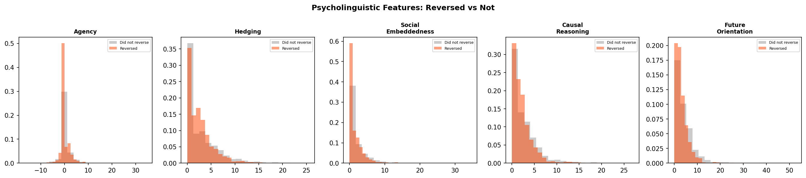
Propensity score matching: career-immigration reversal gap narrows but persists
Key insight
Structural barriers explain part of the reversal gap, but a residual gap remains. Even after matching on text features, urgency, and temporal factors, immigration posts still show 7.1 percentage points lower reversal. This residual is consistent with unmeasured structural barriers (visa systems, legal constraints) that suppress action regardless of emotional or linguistic characteristics of the regret post.
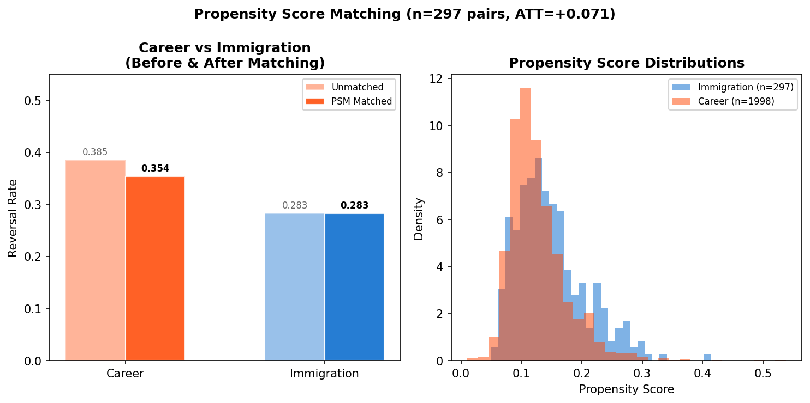
Community engagement does not predict reversal: regret-action decisions are internal
Key insight
Whether a regret post gets community support has negligible effect on whether the person acts on their regret. This is a meaningful null finding: social validation through Reddit (upvotes, supportive comments) does not appear to facilitate behavioral change. Regret-to-action decisions are largely internal or driven by structural factors, not community reinforcement.
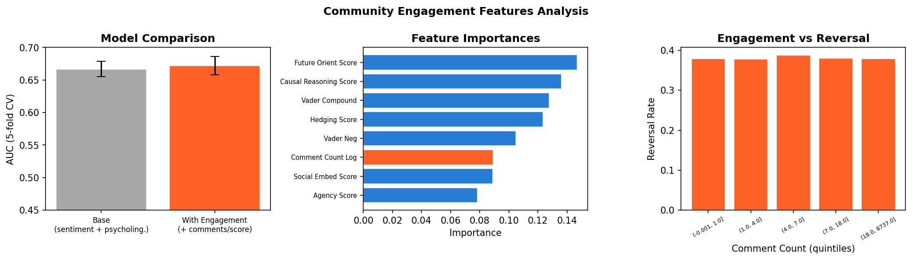
Limitations
- Selection bias: Reddit users are not representative of the general population. Regret posts self-select for people willing to share publicly, likely skewing toward more intense or unresolved experiences.
- Reversal labels are lexical proxies: Reversal is inferred from action verbs ("left", "quit", "ended"), not confirmed behavioral change. Comment-thread validation (kappa = 0.03, n=700) confirms that keyword labels capture "action language" rather than verified reversal. All reversal-related findings should be interpreted as reflecting linguistic patterns in regret narratives.
- Temporal extraction coverage: Despite improvement from 10.7% to 47.2%, over half of posts lack extractable time-to-regret information. The extracted subset may differ systematically from posts without temporal markers.
- Sample imbalance: Immigration (n=297) is substantially smaller than career (n=1,998) and relationships (n=1,309), limiting statistical power for immigration-specific analyses.
- Cross-sectional design: Each post is a snapshot. We cannot track whether regret evolved over time or whether reversal occurred after posting.
- Model ceiling: Best AUC of 0.652 for reversal prediction indicates that text and metadata features capture only moderate signal. The inherent stochasticity of human decision-making likely imposes a natural ceiling on predictive accuracy.
Across 3,604 regret posts spanning career, immigration, and relationships, this analysis identifies a consistent pattern: structural constraints, temporal dynamics, and psycholinguistic features are stronger predictors of action-oriented regret language than emotional intensity or community engagement alone.
Domain matters (p < 0.001): immigration posters show 36% lower hazard of reversal (Cox HR = 0.64). Propensity score matching narrows the career-immigration gap from 10.3pp to 7.1pp (ATT, McNemar p = 0.074), indicating that approximately 31% of the raw domain gap is explained by observable linguistic and temporal differences. The remaining 69% is consistent with unmeasured structural barriers.
Temporal analysis reveals that reversal patterns are not static: they diverge over time (year x domain interaction, p = 0.009), with career reversal increasing while immigration reversal declines. The Great Resignation (2021-2022) counterintuitively showed lower career reversal (33.6% vs 39.2%), suggesting this era's career regret reflected difficulty re-entering employment rather than desire to undo a quit.
Psycholinguistic features provide the richest text-based signal: future orientation (r = -0.097, p < 10-8), causal reasoning (r = -0.051, p = 0.002), and social embeddedness (r = -0.042, p = 0.011) all significantly predict reversal. Community engagement (upvotes, comments) adds negligible predictive value (+0.005 AUC), indicating that regret-to-action decisions are internal rather than socially facilitated.
Critical methodological caveat: Comment-thread validation (n=700, kappa = 0.03) reveals that keyword-based "reversal" labels capture action language rather than confirmed behavioral change. This reframes all findings: what we call "reversal" is best interpreted as "linguistic markers of having acted or intending to act" rather than verified post-regret behavior. This is the single most important direction for future improvement.
For future work, the most promising directions are: (1) developing a validated reversal label via LLM annotation + longitudinal tracking of OP follow-up posts; (2) propensity score matching with additional structural covariates (visa type, employment sector) that cannot currently be extracted from text; (3) expanding the immigration corpus through deeper historical scraping; and (4) testing whether psycholinguistic features (agency, future orientation) causally mediate the domain-reversal relationship via formal mediation analysis.